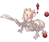
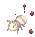

Illusion of Twins
Main Quest
| Requirements | |
|---|---|
| Base Level: | 160 |
| Starting Point: | |
| Rewards | |
| Experience: | - (Base) and - (Job) |
| Items: | 5  Illusion Stones Illusion Stones
|
- Speak with Yolanda to start the quest. You can use the Warper > Illusion Dungeons > Illusion of Twins to go near the entrance directly.
- Speak with Mirko right next to Yolanda.
- Speak with him yet again to enter the dungeon and you'll be asked to find a missing ranger.
You have now gained access to the Illusion of Twins dungeon map. - Briashen can be found on the top left area, at . Talk with her.
- Return back to the entrance, outside the dungeon, and speak with Mirko . He'll warp you back inside the dungeon.
- Speak with Briashen again at the top left area of the dungeon.
- After speaking with her, you'll be asked to find Kahris. Simply go to the locations shown on your minimap and speak with the people you find in any order:
- Rewella
- Kahris
- Rewella
- Once you're done, you will be automatically warped back to the dungeon entrance.
- Talk with Mirko, he'll be waiting for you. After talking with him, you'll be warped back inside the dungeon again.
- Go speak with Briashen at the bottom of the dungeon, at . You'll be back warped back to the dungeon entrance.
- Speak with Mirko and tell him what you've discovered. You will be rewarded with some experience and 5 Illusion Stones.
You have now unlocked all the daily quests for Illusion of Twins.
Daily Quests
Geological Investigation
| Requirements | |
|---|---|
| Base Level: | 160 |
| Starting Point: | |
| Rewards | |
| Experience: | 61,174,500 (Base) and 46,241,250 (Job) |
| Items: | 4 Illusion Stones
|
- Speak with Mirko and accept his request.
- You will need to gather 20
 Fine Dry Sand from Gutsy Giearth.
Fine Dry Sand from Gutsy Giearth. - Return to Mirko to get your reward.
Source of Power
| Requirements | |
|---|---|
| Base Level: | 160 |
| Starting Point: | |
| Rewards | |
| Experience: | 61,174,500 (Base) and 46,241,250 (Job) |
| Items: | 3 Illusion Stones
|
- Speak with Mirko and accept his request.
- You will need to gather 20 Opaque Liquids from Diligent Andre Larva.
- Return to Mirko to get your reward.
Same Thing
| Requirements | |
|---|---|
| Base Level: | 160 |
| Starting Point: | |
| Rewards | |
| Experience: | 124,692,000 (Base) and 92,730,500 (Job) |
| Items: | 3 Illusion Stones
|
- Speak with Mirko and accept his request.
- You will need to hunt the following:
- 10 Diligent Vitata
- 10 Diligent Soldier Andre
- 10 Diligent Piere
- Return to Mirko to get your reward.
| Requirements | |
|---|---|
| Base Level: | 160 |
| Starting Point: | |
| Rewards | |
| Experience: | 59,883,000 (Base) and 45,135,000 (Job) |
| Items: | 4 Illusion Stones
|
- Speak with Mirko and accept his request.
- You will need to gather 20 Shells of Cognition from Diligent Vitata. This quest was customized on NovaRO to only drop from Diligent Vitata instead of any mob.
- Return to Mirko to get your reward.
Daily Quest Reset
As an exclusive feature to NovaRO, you are able to reset all your daily quests cooldowns.
That means you are able to farm Illusion Stones as much as you want on a single character, without having to create additional characters to bypass the cooldown.
To do so, talk to Osmundi. He can be found inside one of the following locations:
- Illusion of Moonlight dungeon .
- Illusion of Vampire dungeon .
- Illusion of Frozen dungeon .
- Illusion of Abyss dungeon .
- Illusion of Teddy Bear dungeon .
- Illusion of Luanda dungeon .
- Illusion of Twins dungeon .
- Illusion of Labyrinth dungeon .
- Illusion of Underwater dungeon .
They are separated in 5 distinct difficulty groups. Each reset will award you with a set amount of:
- Tier 1: Illusion of Moonlight and Illusion of Frozen.
- Reset Reward:
 10 Illusion Stone and a choice between
10 Illusion Stone and a choice between  Moonlight Refine Box and
Moonlight Refine Box and  Frozen Refine Box
Frozen Refine Box
- Reset Reward:
- Tier 2: Illusion of Vampire and Illusion of Abyss
- Reset Reward: 12 Illusion Stone and a choice between
 Vampire Refine Box and
Vampire Refine Box and  Abyss Refine Box
Abyss Refine Box
- Reset Reward:
- Tier 3: Illusion of Teddy Bear and Illusion of Underwater - 1
- Reset Reward: 14 Illusion Stone and a choice between
 Teddy Bear Refine Box and
Teddy Bear Refine Box and  Underwater Refine Box
Underwater Refine Box
- Reset Reward:
- Tier 4: Illusion of Luanda and Illusion of Twins
- Reset Reward: 16 Illusion Stone and a choice between
 Luanda Refine Box and
Luanda Refine Box and  Twins Refine Box
Twins Refine Box
- Reset Reward:
- Tier 5: Illusion of Labyrinth and Illusion of Underwater - 2
- Reset Reward: 22 Illusion Stone and a choice between
 Labyrinth Refine Box and Underwater Refine Box
Labyrinth Refine Box and Underwater Refine Box
- Reset Reward:
The first reset of the day, for each group, will give a 12 Illusion Stone bonus.
Once you complete the dailies of one of the Tiers above, you can reset them. After a reset, these quests will not give any experience until their original 24 hours cooldown pass.
Each Tier can be completed and reset separately, but you cannot reset dailies from a single Illusion Dungeon without completing the others in their respective group.
MVP Spawn
To spawn the Silent Maya MVP, you have to kill 3000 mobs in the dungeon. There will then be an announce on the map when she appears.
Illusion Gears
Speak with Peurom inside the Illusion of Twins dungeon.
More information about these Illusion Enchants can be found in this page.
| Image | Name | Description | Crafting |
|---|---|---|---|

|
Illusion Sprint Mail [1] |
|
|
| Illusion Sprint Shoes [1] |
|
||
| Illusion Sprint Ring [1] |
|
||
| Illusion Sprint Glove[1] |
|
||

|
Illusion Thorn Staff of Darkness [2] |
|
|

|
Illusion Dea Staff [2] |
|
|

|
Illusion Gelerdria [2] |
|
|

|
Illusion Excalibur [2] |
|
|

|
Illusion Doom Slayer [2] |
|
|
| Illusion Ancient Dagger [2] |
|
||

|
Illusion Guard [1] |
|
|
| Illusion Silver Guard [1] |
|


Illusion Enchants
Illusion equipment can be enchanted. For details, see here.
Refine Box
Completing Daily Quest Reset rewards the player with a Refine Box that can upgrade (or sometimes downgrade) a +4 or higher illusion equipment from the matching dungeon to +7 ~ +10.
Defeating an illusion MVP rewards the MVP player (to be confirmed) by chance with a Special Refine Box that can upgrade (or sometimes downgrade) a +4 or higher illusion equipment from the matching dungeon to +9 ~ +12.
You can exchange 25 Refine Box of a single dungeon for 1 Special Refine Box of the same dungeon from Illusion Merchant NPC ().
Note that:
- The chance of getting each refine level is not uniform. For example, there is a significantly lower chance of getting +10 than getting +7 when using a regular Refine Box.
- An upgrade is not guaranteed. For example, using a Refine Box on a +9 illusion equipment may result in a downgrade to +7.
Monsters
| Image | Name | Level | HP | Size / Race / Element |
|---|---|---|---|---|

|
Diligent Andre | 167 | 839,882 | Small / Insect / Earth 3 |
|  | Diligent Soldier Andre | 169 | 943,547 | Medium / Insect / Earth 4 |
|  | Diligent Andre Larva | 164 | 819,978 | Small / Insect / Earth 2 |

|
Diligent Deniro | 167 | 819,978 | Small / Insect / Earth 3 |

|
Diligent Piere | 167 | 825,541 | Small / Insect / Earth 1 |
| Mushy Ant Egg | 164 | 659,810 | Small / Formless / Neutral 2 | |

|
Gutsy Giearth | 168 | 864,988 | Small / Demon / Dark 3 |

|
Gutsy Familiar | 166 | 761,002 | Small / Brute / Dark 2 |

|
Diligent Vitata | 169 | 879,511 | Small / Insect / Poison 4 |

|
 Silent Maya |
175 | 22,000,000 | Large / Insect / Neutral 4 |
Cards
| Card | Type | Effects |
|---|---|---|
| Shield Card |
| |
| Weapon Card |
| |
| Weapon Card |
| |
| Shield Card |
| |
| Shield Card |
| |
| Shield Card |
| |
| Headgear Card |
| |
| Weapon Card |
| |
| Headgear Card |
| |
| Shield Card |
|